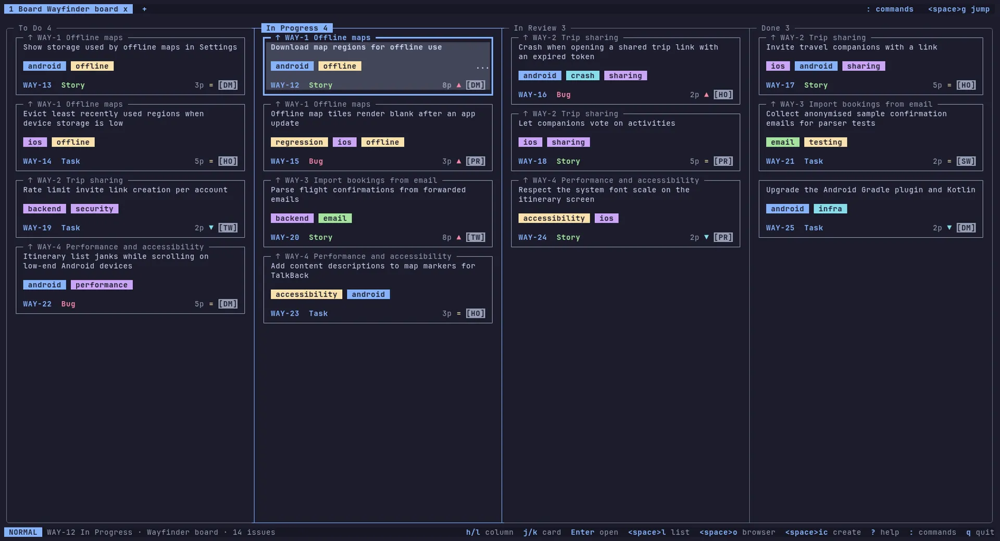
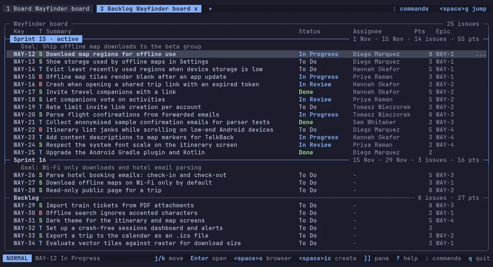
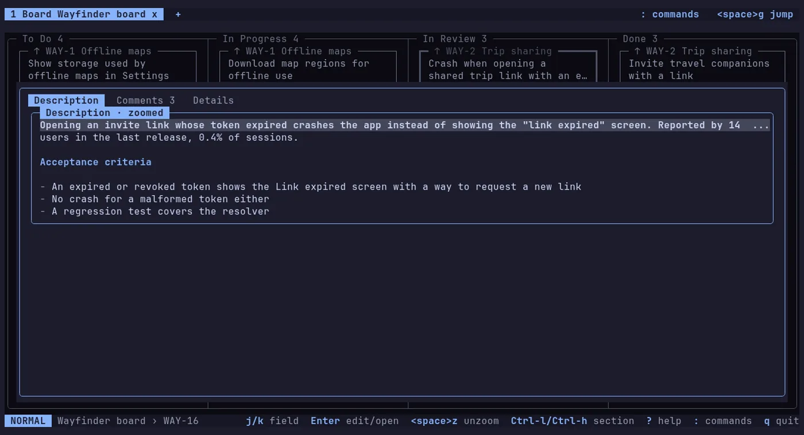
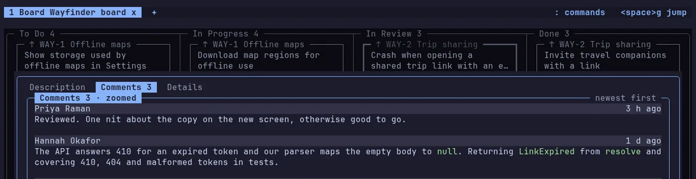
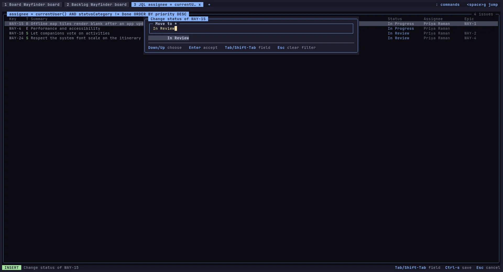
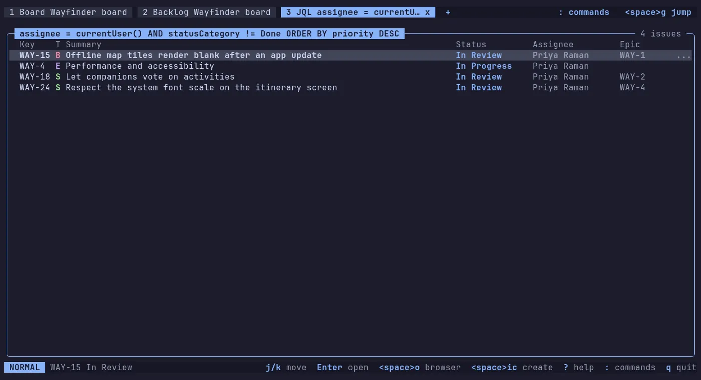

Geeratya_
A keyboard-first terminal client for Jira Cloud: your Kanban board, backlog and issues in the terminal, with vim-style keys. The mouse is optional but fully functional.
- jk move
- Enter open
- : commands
- ? help
- q quit
The everyday loop, from the keyboard
The Jira web UI is slow and mouse-heavy for the things done many times a day: look at the board, move a card, open an issue, write a comment, create a sub-task. Geeratya does those in a terminal, fast. The screenshots are of the real UI against a fake Jira.

Kanban board
The board's own columns, with cards you can move. Moving a card to another column changes its status.

Backlog and sprints
The backlog, with ranking. On Scrum boards: the backlog as sprints, moving issues between sprints, and creating, starting and completing sprints.
JQL and saved filters
A JQL query or a saved filter opens as an issue list in its own tab. Tabs sit over the active site, and a local cache lets views open instantly.

Issue view
Description and comments as formatted text, plus sub-tasks, an epic's children, linked issues and remote links. Copy text from it to the system clipboard.

Comments
Add, edit and delete comments without leaving the terminal.


Change status
Pick the target status from a filtered list, or move the card on the board. Jira has no undo, so check the target before you accept.
Everything in the box
The screens above are part of this list. The rest of it:
- Done cutoff of a Kanban board: follows Jira's own "Hide done work items after" (read, never written), with a quick picker per tab (1 to 4 weeks, all)
- Create, edit and delete epics, stories, tasks, bugs and sub-tasks, with each project's required fields
- Company-managed and team-managed projects alike
- Profiles: saved sites and accounts, one active at a time, quick switch
- Start target on the command line:
geeratya GEN-123,--board,--backlog,--jql,--filteropen one tab - Command palette, configurable vim-style keys and full mouse support
- Settings screen: change the theme and the options visually, saved at once
Attachments and images are shown as links that open in the browser, never rendered in the terminal.
Install it, connect it, press ?
Needs a Jira Cloud site, an Atlassian account on it and an API token. Any terminal works; truecolor looks best. No release is published yet: every route below is available with the first release.
macOS (Apple silicon) and Linux (x64)
brew install aleksanderis/tap/geeratyaManual macOS download: the binary is not notarised, run
xattr -d com.apple.quarantine geeratyaonce.Windows
winget install Aleksanderis.Geeratyawinget is pending review, so for now Or use the .zip from Releases.
Linux packages
The .deb, .rpm and .tar.gz are on Releases.
Then start it with geeratya. The user guide walks through the first start: an API token, a profile and the first board. ? shows the keys of the current view, q quits.